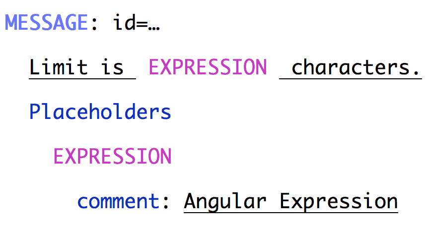
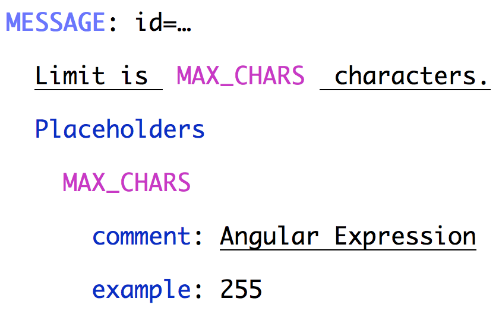
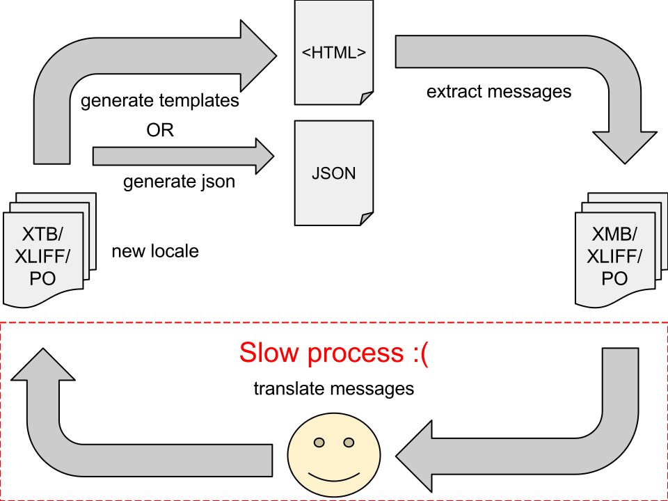

Better i18n
for your Angular apps
A first look at Angular's new i18n story
By Chirayu Krishnappa and Pascal Precht
Imagine you've successfully launched your web app.
What does internationalization (i18n) even mean?
- Translating application messages... that's it right? No!
- Localizing for each country and region should be easy
- This is more than just changing locale, currency, date etc.
...
A good solution lets you localize your apps in whatever shape they are.


Limit is 255 characters.
What does the translator see?

(This is an example. Translators have more UI around this)
Limit?
What "Limit"?!
What makes a high quality translation?
- Translators really care about context
- What do the words "on" and "off" mean without context?
- Screenshots of application views are even better
- (And EVEN better) Live Previews
Limit is 255 characters.
<p i18n="Label to show the maximum length of characters allowed in comments.">
Limit is 255 characters.
</p>
What does the translator now see?

<input
ng-model="name"
placeholder="Firstname Lastname">
We can provide default messages for common attributes.
Translator's view

<input
ng-model="name"
placeholder="Enter name"
i18n-placeholder="Text input placeholder for the full name of a friend.">
 WebComponents ready!
WebComponents ready!
Translator's view

Placeholders
Limit is {{N}} characters.
What happens when there's an interpolation?
Translator's View

Translator's View

Plurals and Gender
- We have
ngPluralize and ngSwitch, but they're not declarative enough
- Plural rules vary dramatically across languages.
- Your translator needs to add or remove categories as they apply to the target locale.
- They should see all the categories together.
How can we pluralize declaratively?
{{numMessages, plural,
=0 { You have no new messages }
=1 { You have one new message }
other { You have # new messages }
}}
What does the translator see?
{numMessages, plural,
=0 { You have no new messages }
=1 { You have one new message }
other { You have # new messages }
}
Declarative Gender
{{friendGender, select,
male { Invite him }
female { Invite her }
other { Invite them }
}}
Similar to plurals. You can nest them or combine them in other ways.

Pseudotranslation to the rescue!
Pseudotranslation provides INSTANT translation into gibberish.
- Sentences size doubled by repeating words
- Characters munged in some way such as being accented
- Brackets on either end to easily see text that's cut off
Example
Pseudotranslated Message:
[Enter Ën̈ẗër̈ your ÿöür̈ name n̈äm̈ë]
Recap
Alright, when I can start?
Status
- Angular 1.4 is shipping with declarative support of plurals and gender. (MessageFormat)
- Command line extraction tools are moving from prototype to production code (no timeline)
- Angular 2 support begins next month